Phase 0
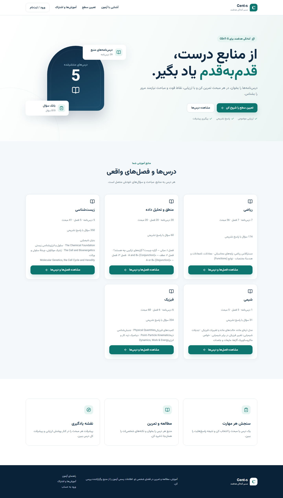
Updated after original-reference logo review: home/login/dashboard images use the refined SVG. Reader images retain the prior foundation capture because that shell has no Brand placement. New logo reference comparison.
Local preview data differs between sessions. Login baseline originally had an unavailable API. Comparison concerns brand/theme foundations, not data identity or later page redesign. No generated mockups.

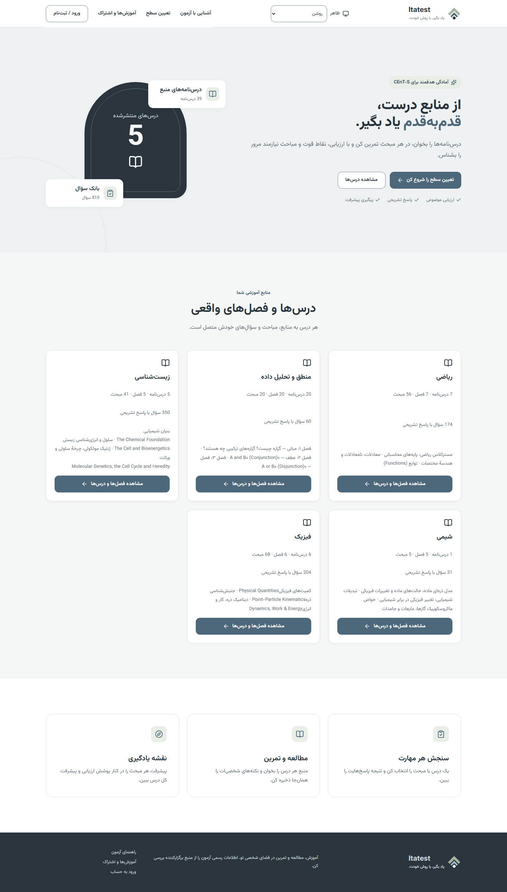
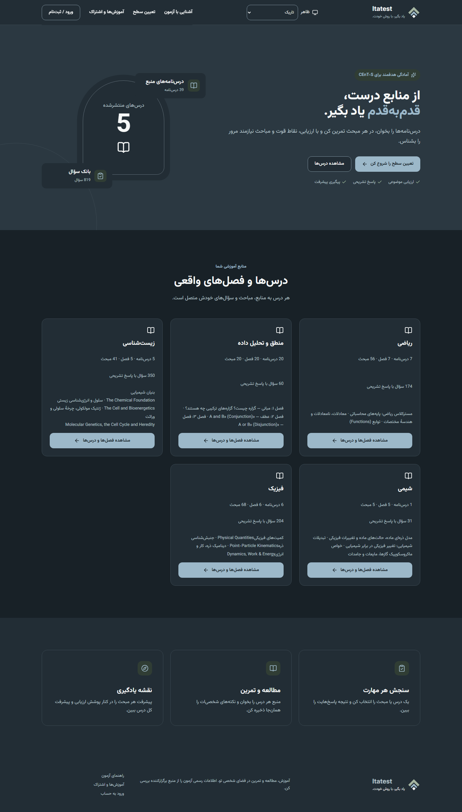
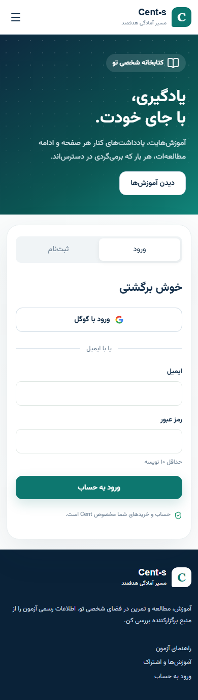
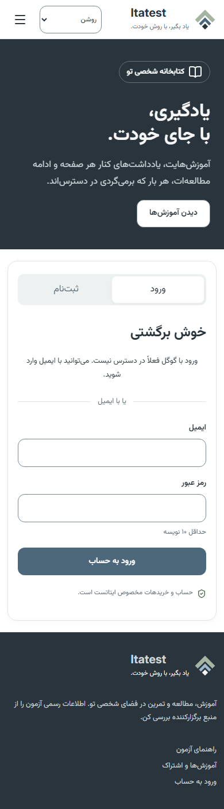
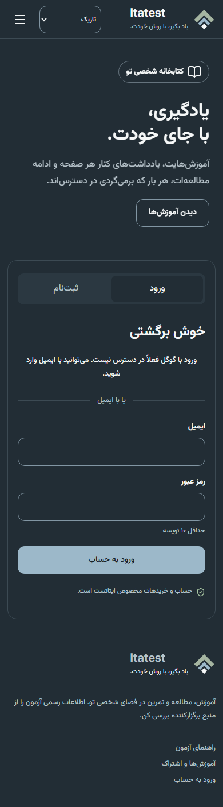
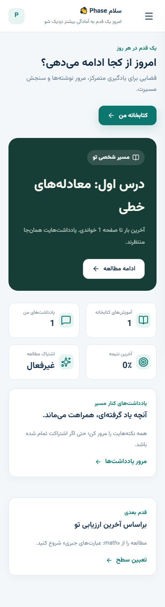
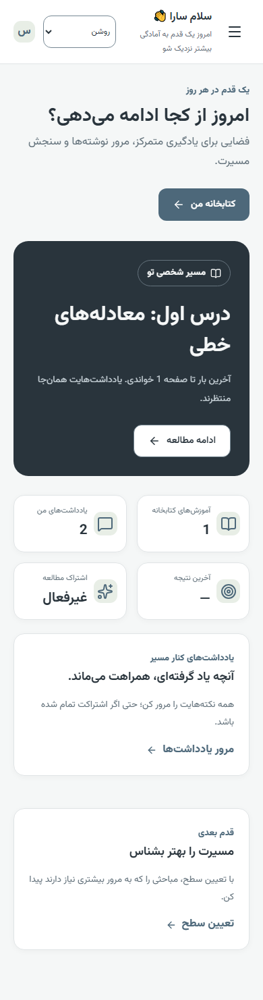
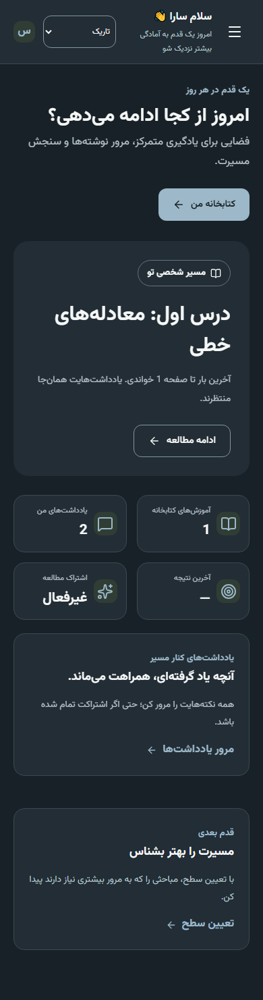
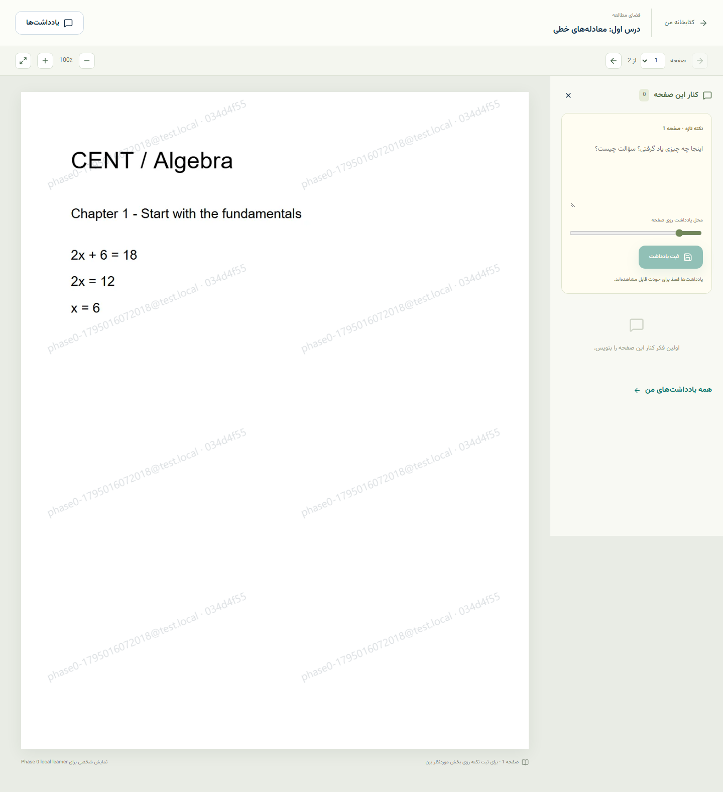
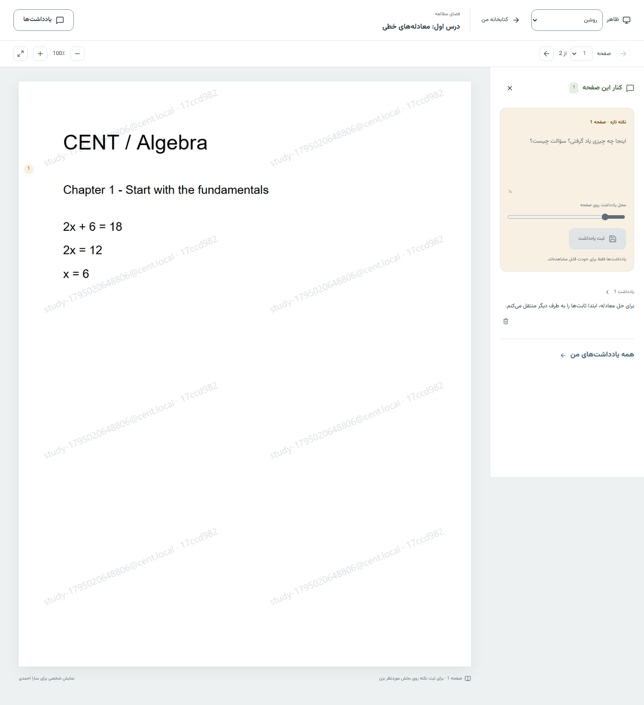
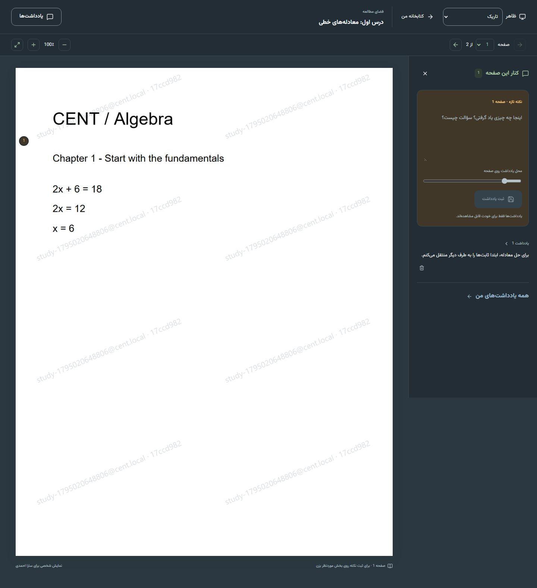